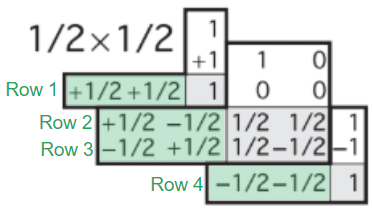
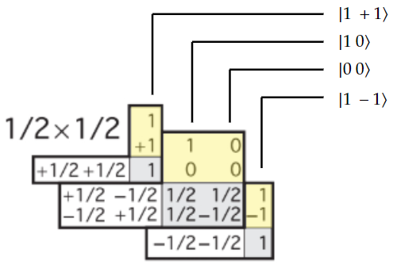
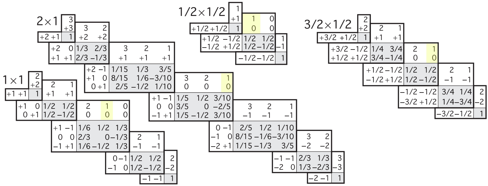

Fernando Garcia
Home Research Blog Other About me
Quantum Mechanics
Clebsch-Gordan examples


A square root is implied on every coefficient (shaded in gray).
Source: Particle Data Group.
Rows
Row-reading allows us to write coupled two-particle states as linear combination of uncoupled one particle states.
Consider two $\frac{1}{2} $ spin particles. There are four possible coupled states $| s_1 \;s_2 \;m_1 \;m_2 \rangle $:
\[| \frac{1}{2} \; \frac{1}{2} \; \frac{1}{2} \; \frac{1}{2} \rangle ,\;\;\;| \frac{1}{2} \; \frac{1}{2} \; \frac{1}{2} \; -\frac{1}{2} \rangle ,\] \[| \frac{1}{2} \; \frac{1}{2} \; -\frac{1}{2} \; \frac{1}{2} \rangle ,\;\;\;| \frac{1}{2} \; \frac{1}{2} \; -\frac{1}{2} \; -\frac{1}{2} \rangle \]We head to the $1/2\times 1/2 $ table (since we have spins $1/2 $ and $1/2 $)
The numbers on the right (shaded in gray) tell us the coefficients we will use to write the states written vertically (shaded in green in the picture below).
Row 1 tells us that
\[| \frac{1}{2}\;\frac{1}{2}\;\frac{1}{2}\;\frac{1}{2} \rangle = | 1\;+1 \rangle \]Row 2 tells us that
\[| \frac{1}{2}\;\frac{1}{2}\;\frac{1}{2}\;-\frac{1}{2} \rangle = \frac{1}{\sqrt{2}}| 1\;0 \rangle\;+\;\frac{1}{\sqrt{2}}| 0\;0 \rangle \]Row 3 tells us that
\[| \frac{1}{2}\;\frac{1}{2}\;-\frac{1}{2}\;\frac{1}{2} \rangle = \frac{1}{\sqrt{2}}| 1\;0 \rangle \;-\;\frac{1}{\sqrt{2}}| 0\;0 \rangle \]Row 4 tells us that
\[| \frac{1}{2}\;\frac{1}{2}\;-\frac{1}{2}\;-\frac{1}{2} \rangle = | 1\;-1 \rangle \]The interpretation here is that if we put two particles with spin $s_1 $ and $s_2 $, along with $m_1 $ and $m_2 $ in a box, row-reading the Clebsch-Gordan table for this system will tell 1. the total spins we might measure, and 2. their probabilities.
As an example of this, consider a box with two particles:
\[| 2\;0 \rangle | 1\;-1 \rangle \equiv | 2 \;1\;0\;-1 \rangle \]The respective Clebsch-Gordan table indicates that
\[| 2 \;1\;0\;-1 \rangle=\sqrt{\frac{6}{15}}| 3\;-1 \rangle +\frac{1}{\sqrt{2}}| 2\;-1 \rangle +\frac{1}{\sqrt{10}}| 1\;-1 \rangle \]Measuring the total spin of the system can yield
\begin{align*} s=3 &{\;} \text{with a probability of} \; \frac{6}{15}\\ s=2 &{\;} \text{with a probability of} \; \frac{1}{2}\\ s=1 &{\;} \text{with a probability of} \; \frac{1}{10} \end{align*}Columns
Column-reading a Clebsch-Gordan table allows us to write a single particle state as a linear combination of 2-particle states.
Say you have a particle with $s=1 $ and $m=0 $. We can expand it in terms of a $s_1 =1/2,s_2 =1/2 $ system using the $1/2\times 1/2 $ table, or in terms of a $s_1 =2,s_1 =1 $ system using the $2\times 1 $ table.
To name a few:
If the state is to be decomposed into a spin $1/2 $ spin $1/2 $ system, then
\[| 1\; 0 \rangle =\frac{1}{\sqrt{2}}| 1/2\;1/2 \rangle | 1/2\;-1/2 \rangle +\frac{1}{\sqrt{2}}| 1/2\;-1/2 \rangle | 1/2\;1/2 \rangle \]If the state is to be decomposed into a spin $1 $ spin $1 $ system, then
\[| 1\;0 \rangle =\frac{1}{\sqrt{2}}| 1\;1 \rangle | 1\;-1 \rangle -\frac{1}{\sqrt{2}}| 1\;-1 \rangle | 1\;1 \rangle \]If the state is to be decomposed into a spin $3/2 $ spin $1/2 $ system, then
\[| 1\;0 \rangle =\frac{1}{\sqrt{2}}| 3/2 \; 1/2\rangle| 1/2 \; -1/2\rangle -\frac{1}{\sqrt{2}}| 3/2 \; -1/2\rangle| 1/2 \; 1/2\rangle \]If the state is to be decomposed into a spin $2 $ spin $1 $ system, then
\[| 1\;0 \rangle =\sqrt{\frac{3}{10}}| 2 \; 1\rangle| 1 \; -1\rangle -\sqrt{\frac{2}{5}}| 2 \; 0\rangle| 1 \; 0\rangle +\sqrt{\frac{3}{10}}| 2 \; -1\rangle| 1 \; 1\rangle \]